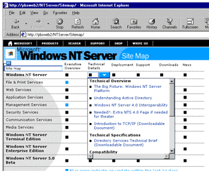

|
| ||
|
| ||
Nancy Winnick Cluts
Microsoft Corporation
November 9, 1998
The following article was originally published in Site Builder Network Magazine.
Imagine being tasked with implementing a massive redesign of a very large Web site.
You've got a great -- albeit small -- team of smart developers and you've got some great new technologies at your fingertips. You can do what you did last time: hand-code all of your scripts and HTML. Or you can try the newest tool that automates much of the work you had to do before (including all of that database integration). That's the dilemma Microsoft's Windows Web team faced when they redesigned the Windows NT® Server Web site  . The team decided to try Microsoft Visual InterDev™ 6.0
. The team decided to try Microsoft Visual InterDev™ 6.0  .
.
You can use Visual InterDev 6.0 to create a Web site quickly and easily. On my system, I am running Windows NT 4.0 with the latest service pack and the Visual InterDev 6.0 beta release with Peer Web Services installed. When you start the application, you are prompted with a dialog box that allows you to open an existing project, a recent project that you worked on, or to create a new project.
The first time I ran Visual InterDev, I chose to open a new project, but you can also choose to use the Sample App Wizard. Choosing "New Web Project" results in a series of prompts to build the project. The first prompt allows you to specify the server that you will be using. After you name the server (mine was my machine name), Visual InterDev will make a connection to that server. The next step involves deciding whether you'd like to enable full-text search, to apply one of the pre-built layouts, or to apply a theme. Applying a layout allows you to place navigation bars (including banners) and links to sibling, child, global, and first-level pages on your Web site. Themes give your page a consistent look, and you can choose from a large list that offers looks ranging from the crisp and businesslike to the funky. I happen to like the "Saturday TV Toons" one. You can play around with these different themes and layouts. If the one you choose does not look right after you do a bit of work, no need to worry; you can change it later by choosing "Apply Theme and Layout" from the "Edit" menu.
Now you know how to add a cool look to a skeleton of a site, and you can click the various .htm files that have been created for you to see what you have to work with; however, what you really need is to hook up your site with a database. To do this, you need to set up a data source. To set up an Access data source, open the ODBC control panel applet, and look in the list entitled "User DSN" (Data Source Name). If you don't see Microsoft Access Driver in the list, you'll need to install it via the "Drivers" tab. Once you select the Microsoft Access driver, choose "Add" to add the DSN. This can be anything you want. Then click the "Select" button to choose the database you need to hook up. Now that your DSN is set up, you can add the data source to your Web project via the Project menu. Choose "Add Data Connection" and the "Machine Data Source" tab. Select the DSN, and add a connection name. This is the name you will use within your Web project to reference the database. You can see that the DSN is set up by viewing the Data Environment branch of the tree view that is shown on the right-hand side of the screen.
You are now at the point where you can create your home page. Go to the toolbox and point-and-click on the objects that you would like on your page -- including buttons, list boxes, and check boxes. After placing the objects on the page, you can view the HTML that was generated by clicking on the "Source" tab. To get a gander at what the page will look like within the browser, click on the "Quick View" tab.
The new interface for the Windows NT Server Web site was designed to make it easier to find pertinent information about Windows NT Server, including technical information, products overviews, press releases, support information, and so forth. There's more information on the home page in simple text, so that you can easily take a look at what is available on the Web site. The goals for the redesign were basic yet challenging:
If you have read the article series about the creation of the home.microsoft.com Web site, you might find these goals to be hauntingly similar. They are -- and the team that created the home.microsoft.com site also updated the new Windows NT Server site. In fact, many of the changes that were made to the new Windows NT Server site are mirrored in the previous work. To read more about it, check out:
Web site, you might find these goals to be hauntingly similar. They are -- and the team that created the home.microsoft.com site also updated the new Windows NT Server site. In fact, many of the changes that were made to the new Windows NT Server site are mirrored in the previous work. To read more about it, check out:
To gain speed, the team eliminated components that created dependencies. This means that they looked at components that might have to query live databases, and replaced those components with application-scope dictionary objects that were loaded as needed and that resided in memory on the server. An example of this was the handling of menus across pages. Menu data is stored in a dictionary object, which can be accessed by any page on the Web site to produce menus in any configuration or format.
The team also stopped using the Browser Capabilities component for browser sniffing. The idea was to eliminate the use of server-side components if an alternate in-code solution was possible. Instead, ASP routines were included to use the useragent string to determine the browser type. It is the same code used by home.microsoft.com. When the include file runs, ASP variables are created that store information on which browser is in use, including version and platform information.
In the site development, it was important to separate content from format and HTML. For instance, when an article was added to the site, it was important to ensure that the menus where the article would reside would be updated automatically. The team decided to use Visual InterDev 6.0 as the development, production, and site management tool in order to handle the automatic updating of menus, table of contents, and so forth. The Site Diagram feature of Visual InterDev lent itself nicely to this notion of storing "metadata" --information about a page (the parent page as well as the child and sibling pages). This tool allows you to add pages to your Web application and create navigational links between pages by dragging and dropping the files. Once you save the diagram you've created with the tool, the pages and navigational links in your project are all updated for you. The site diagram is represented by a tree with boxes showing the hierarchy of the Web site. Each Web application can have multiple site diagrams, and each site diagram can have multiple trees.
Below, you can see what the site diagram for the Windows NT Server Web site looks like. The grid that you see shows the type of information you can find (overview, technical details, etc.) across the top of the grid. The technical area (Windows NT Server, File & Print Services, and so forth) are shown along the left-hand column of the grid. The square dots can be clicked on with a mouse. If you click directly on the dot, you will go directly to the area designated on the grid (i.e, Windows NT Server Technical Articles). If you let the mouse hover over the dot, you will see an arrow. If you click on the arrow, you will get a list of content available in that area. Blue dots denote articles that have been posted within the last two weeks.

Visual InterDev handles the update of navigational links automatically across the entire site. The team decided use the site map structure file, structure.cnf, to provide the information needed across the Web site by loading the data from the sitemap file into a dictionary object. This allowed structural changes made across the pages of the site using Visual InterDev to be reflected instantanously in the HTML across the site.
The structure.cnf file in Visual InterDev keeps track of the parentage of the pages for the logical structure (menus) for the site. This file is used as the basis for loading the menu dictionary object with data for the site. The team used ASP to retrieve the parent, children and siblings of a given node in the tree. Once this information is known, you can determine the URL, title and order in the hierarchy of any page on the site -- thus creating menus on the fly.
Metadata is used to provide generalized information about the web page. The Web team decided to enhance the concept of metadata by modeling a page to be an object with properties, which may be required for other pages, as well. For example, a property of a page might be the download size in kilobytes. If this information were needed across pages of the site, it could be stored in a dictionary object. In order to gather this meta data, the team created an internal tool, the Windows NT Crawler, that runs on the development server, collecting properties of a page and loading these properties into a dictionary object. The properties collected are specified by the person (producer or editor) who is adding the page to the site via a design time control (DTC) written to extend Visual InterDev 6.0. Design-time controls are visual authoring components that automatically generate standard HTML or script at design time instead of at run time. The DTC makes it easy to add new properties or edit existing properties on a page. The Web team wrote five DTCs for setting the metadata, such as download information, title and keyword information, properties of index pages, parentage information, and timestamp information for pages on the Web site.
In addition to gathering properties, the Windows NT Crawler application can be used to gather the document object model (DOM) properties of a page. For example, the text of the <TITLE> statement on an HTML page can be gathered and stored. The Windows NT Crawler application is run on the development server at specified intervals (every few minutes), and the output is written out to a text file. This file is then loaded into several dictionary objects by an ASP file. The ASP file is included in a general file called global.inc. This include file is used on every page in the site. It contains routines that are required across the site.
Separating content from format is an important capability for a Web site. The larger the site becomes, the more difficult it is to keep all of the various files up to date. It is also a large waste of resources to have absolutely everyone hand-coding and tweaking the same HTML to do the same things. As a result, the team relied heavily on the creation and use of templates on the Web site. This meant that the production team, as well as the editors, could add or edit content on the site without worrying about upsetting the format of the page. The team made careful use of these template features in Visual InterDev 6.0. These are basically include files that are called from an ASP files. With Visual InterDev 6.0, templates provide the editors a WYSIWYG method of creating a "boiler plate" for the content on pages without affecting the overall format of those pages.
As you can see, the team was able to leverage the built-in capabilities of Visual InterDev 6.0 and to incorporate their own DTCs. This made building the Windows NT Server Web site easier. The powerful tools provided by Visual InterDev 6.0 allow you to create world-class Web sites via simple point-and-click interface and WYSIWYG tools. And you don't have to forego the use of cool new technologies, such as ASP or DHTML. These are fully supported within the integrated development environment. It almost makes me wonder how we were able to create Web sites with Notepad as our only tool.
Ever since Site Builder Network developer-technology writer Nancy Cluts became a godmother recently, she's been making us offers we can't refuse.
Did you find this material useful? Gripes? Compliments? Suggestions for other articles? Write us!
© 1999 Microsoft Corporation. All rights reserved. Terms of use.